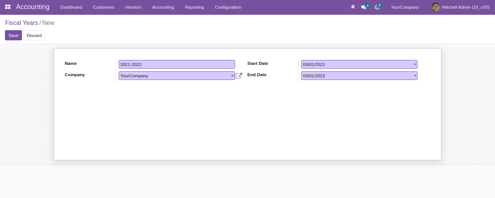
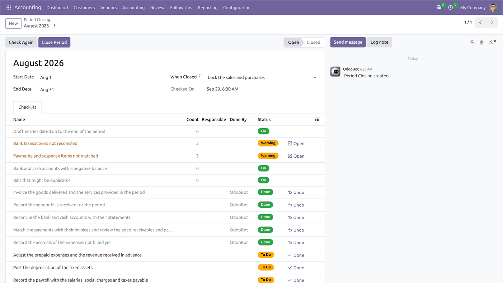
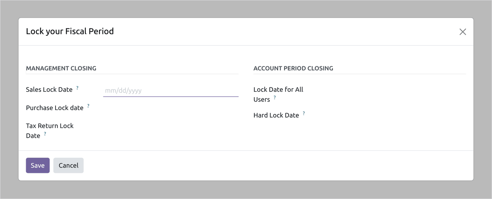

Define the year your books close on, generate its periods, close them one by one, and lock what has been filed so it cannot change underneath you.
Set the start and end date of the financial year and generate its periods. Every report that offers this financial year then follows it.

A fiscal year and the periods generated inside it.
Period closing marks a period as done, and the year-end closing carries the result of the year to the retained earnings account and opens the next one.

Period closing.
Three lock dates decide who can still post before a date.

The lock dates.